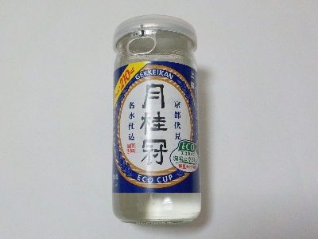
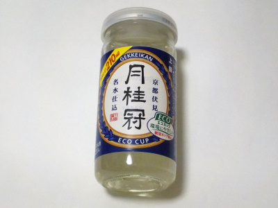
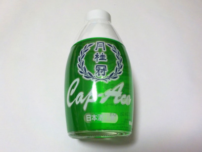
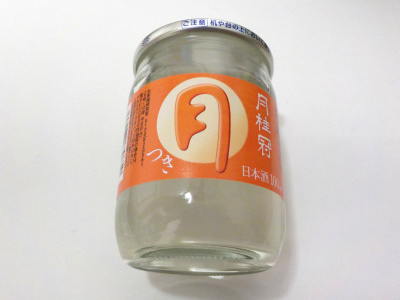

月桂冠の環境にやさしい軽量エコカップ。
2024/03/01

瓶が薄くて軽いからエコだそうです。ふーん。
紙パックと瓶ってどっちがエコなんでしょうね？
この商品は、味はしっかりあるけど後味すっきりなお酒でした。
京都府京都市伏見区南浜町247番地
2024/03/01

瓶が薄くて軽いからエコだそうです。ふーん。
紙パックと瓶ってどっちがエコなんでしょうね？
この商品は、味はしっかりあるけど後味すっきりなお酒でした。
2023/07/01

前回飲んだキャップエースの方がいいかな。
でもコスパはこっちがいい。とっくりとお猪口を用意すればいいけど、それは面倒なので無理。
私はこれで十分美味しいです。
2023/06/18

プラスチックのお猪口が付いたお酒です。プラスチックなんてって思ってしまいましたが、使いてみるととっても飲みやすかったです。
日本酒とお猪口って相性がいいですね。だからあるんだって思いました。
小さいサイズのお酒だとワンカップタイプが多いですが、これはねじるタイプの蓋がついているので、携帯性がとてもいいです。旅のおともに良さそうです。
2022/09/18

月桂冠の月は安いですよね。お値段それなりの商品だろうって思っていたんですが、飲んでみるとそうでもないですね。
普通に普通の日本酒って感じがしました。普段飲むのにはこれでいいかも。
安いお酒っていうとビール系やレモンサワー系を買っていましたが、これも候補に入れようと思います。